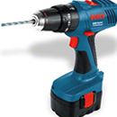
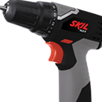

Furadeira de Impacto / Parafusadeira GSB 12-2
Voltagem: 12V.
Peso (com bateria): 1,6kg.
Bateria: 1,5 Ah.
Acompanham: 1 carregador de 1 hora AL 1411 DV, 2 baterias de 1,5 Ah NiCd, maleta de transporte.
Peso (com bateria): 1,6kg.
Bateria: 1,5 Ah.
Acompanham: 1 carregador de 1 hora AL 1411 DV, 2 baterias de 1,5 Ah NiCd, maleta de transporte.
 Furadeira de impacto Skill
Nº de velocidades: 1.
Furadeira de impacto Skill
Nº de velocidades: 1.Potência: 500W.
Mandril: 3/8 " (10 mm).
Peso: 1,3 kg.
Rotação: 3000 rotações/min.
Capacidade de Perfuração:
Aço: 10mm.
Madeira: 20mm.
Concreto: 10mm.

Furadeira parafusadeira Skill
LED indicativo de modo reversível.
LED indicador de bateria.
Bateria de 10,8V com Íons de lítio.
Voltagem: 10,8V.
Capacidade da bateria: 1,3 Ah.
Rotações por minuto: 0 - 650 rpm.
Tempo de carga: 1 h.
LED indicador de bateria.
Bateria de 10,8V com Íons de lítio.
Voltagem: 10,8V.
Capacidade da bateria: 1,3 Ah.
Rotações por minuto: 0 - 650 rpm.
Tempo de carga: 1 h.